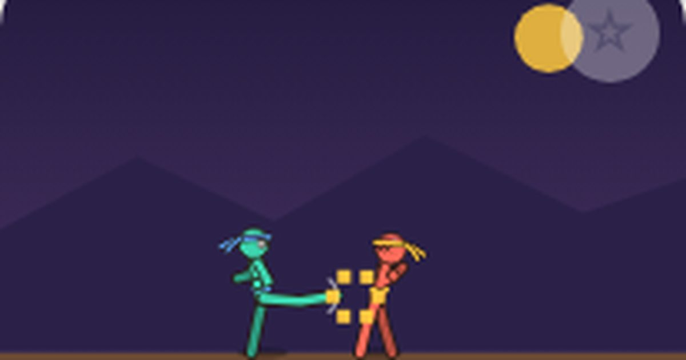

막대 파이터
Stick Fighter
격투 · 1P/2P무료설치 없음폰 · PC
▶ 지금 바로 하기로그인 없이 브라우저에서 바로 시작돼요
어떤 게임인가요?
막대인간 4명 중 골라 1:1 격투. 주먹 · 발차기 버튼이 따로! 캐릭터마다 고유 특수기와 가위바위보 상성이 있어요. 3판 2선승.
목표 · 상대 체력을 0으로 만들면 라운드 승리. 3판 2선승입니다.
이렇게도 찾아요
막대 격투스틱맨 게임둘이서 격투stickman fightstick fighter2 player fighting
#스틱맨 #격투게임 #2인용게임
게임 방법
- 캐릭터 4명(권법가 · 검객 · 봉술가 · 닌자)마다 무기 사거리, 속도, 고유 특수기가 다릅니다.
- 특수기 상성: 회전봉은 장풍을 되받아치고, 돌진베기는 장풍을 뚫고, 순간이동은 돌진베기를 피하고, 회전봉은 뒤로 온 닌자도 때려요.
- 주먹과 발차기 버튼이 따로 있어요. 주먹을 연타하면 잽 → 스트레이트 → 돌려차기 3단 콤보, 잽 · 스트레이트 뒤에 발차기를 누르면 바로 돌려차기로 이어져요.
- 방향과 공격을 조합하면 기술이 바뀝니다 (아래 기술표 참고).
- 가위바위보 상성: 때리기 → 잡기를 이기고, 잡기 → 막기 · 반격기를 이기고, 반격기 → 때리기를 이겨요. 상대 습관을 읽으세요.
- 상대 반대쪽으로 방향을 누르고 있으면 막기(피해 80% 감소). 다리 쓸기는 앉아서 막아야 하고, 내려찍기는 서서 막아야 해요.
- ▼로 앉으면 장풍이 머리 위로 지나갑니다.
- 때리거나 맞으면 기 게이지가 차고, 절반 이상이면 특수(장풍)를 쏠 수 있어요. 60초가 지나면 체력이 많은 쪽이 승리.
등장하는 것들
- 앞 + 주먹 (붙어서) · 잡기 · 막기와 반격기를 뚫고 뒤로 던짐 (때리기엔 짐)
- 뒤 + 주먹 · 반격기 · 0.4초 안에 맞으면 받아치기 (잡기엔 짐)
- 점프 + 주먹 · 어퍼컷 · 공중의 상대를 높이 띄움
- 앞 + 점프 + 주먹 · 솟구치는 주먹 · 가장 센 기술(15)
- ▼ + 발차기 (또는 ▼ + 주먹) · 다리 쓸기 · 서서 막기를 뚫음
- 공중 ▼ + 발차기 · 내려찍기 · 앉아 막기를 뚫음
- 발차기 · 묵직한 돌려차기 · 멀리 밀어냄
- 앞 · 앞 (두 번) · 돌진 기술: 베기 · 내려치기 · 펀치 · 발차기 (앉아 막기 뚫음)
- 특수 (기 50) · 캐릭터별: 장풍 · 돌진베기 · 회전봉 · 순간이동
- 공중 발차기 · 날아차기
공략 팁
- 상대가 점프해서 들어오면 점프+공격 어퍼컷으로 떨어뜨리세요.
- 서서 막기만 하는 상대에겐 다리 쓸기, 앉아 있는 상대에겐 공중 내려찍기!
- 솟구치는 주먹은 세지만 착지할 때 빈틈이 커요. 확실할 때만 쓰세요.
- 장풍은 점프하거나 앉아서 피할 수 있어요.
 골목 대장
골목 대장 공룡 달리기
공룡 달리기 한방 벽돌깨기
한방 벽돌깨기 별빛 편대
별빛 편대 오목
오목 왕머리 축구
왕머리 축구